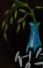

# 나무
from sikuli.Sikuli import *
import utils
reload(utils)
from utils import *
def showupFarm():
r_leftmenu = Region(Region(14,306,83,116))
r_farm = Region(Region(610,231,39,21))
if not r_farm.exists(,1):
r_leftmenu.find(Pattern().similar(0.46)).click()
#
return
def expTree(fl):
Debug.user("Harvist ")
print fl
mouseMove(fl)
click(fl)
#wait
try:
Region(Region(587,358,84,24)).wait()
except FindFailed:
return
# click(Location(688, 466))
click(Location(571, 470)) # exptree
sleep(0.5)
try:
Region(Region(582,570,94,36)).find().click()
except FindFailed:
return False
sleep(1)
click(fl)
return True
def harvist(fl):
Debug.user("Harvist ")
print fl
mouseMove(fl)
click(fl)
#wait
try:
Region(Region(587,358,84,24)).wait()
except FindFailed:
return
click(Location(688, 466))
sleep(0.5)
try:
Region(Region(582,570,94,36)).find().click()
except FindFailed:
return False
sleep(1)
click(fl)
return True
def HarvistFarm():
# r_harvmenu = Region(-158,-653,101,251)
avail_f = []
field_array = [Location(623, 381), Location(536, 424), Location(453, 471),Location(709, 421), Location(535, 510),Location(795, 461) ]
for fl in field_array:
r = Region(fl.x - 25, fl.y-20, 50, 40)
if r.exists():
avail_f.append(fl)
Debug.user("==== ")
for f in avail_f:
Debug.user("try Harvist ")
print f
# if not harvist(f):
if not expTree(f):
# Screens. region .findclick X
click(Location(752, 372))
break
print avail_f
return
r_harvmenu = Region()
r_harvmenu.find().click()
# check number of Soil
r_soilnum = Region(268,-334,16,19)
# num = int(r_soilnum.text())
# Debug.user("Num of Soil is %d" % num)
Region(190,-410,136,164).wait(,3)
r= Region(231,-676,440,320)
try:
soil = r.find(Pattern())
except FindFailed:
return
Debug.user("try to find soil")
while r.find(Pattern().similar(0.80)):
Debug.user("Found one ")
l_cursoil = r.getLastMatch().getTarget()
#Debug.user(l_cursoil)
r.getLastMatch().click()
#wait(0.5)
Region(362,-549,301,180).find( ).click()
r_moneytree = Region(317,-644,385,383)
if not r_moneytree.exists():
break
r_moneytree.find().click()
wait(0.3)
click(l_cursoil)
#wait(1)
Debug.user("one harvest done")
Debug.user("End of Harvist")
type(Key.ESC)
return;
if __name__ == "__main__":
Settings.UserLogs = True
Settings.UserLogPrefix = "user"
Settings.ActionLogs = True
openApp("Google Chrome")
Debug.user("Harvist Farm %s" % ("V01"))
# MakeFullScreen()
showupFarm()
# HarvistFarm()
Debug.user("End ")
exit()
).click()
r_moneytree = Region(317,-644,385,383)
if not r_moneytree.exists():
break
r_moneytree.find().click()
wait(0.3)
click(l_cursoil)
#wait(1)
Debug.user("one harvest done")
Debug.user("End of Harvist")
type(Key.ESC)
return;
if __name__ == "__main__":
Settings.UserLogs = True
Settings.UserLogPrefix = "user"
Settings.ActionLogs = True
openApp("Google Chrome")
Debug.user("Harvist Farm %s" % ("V01"))
# MakeFullScreen()
showupFarm()
# HarvistFarm()
Debug.user("End ")
exit()